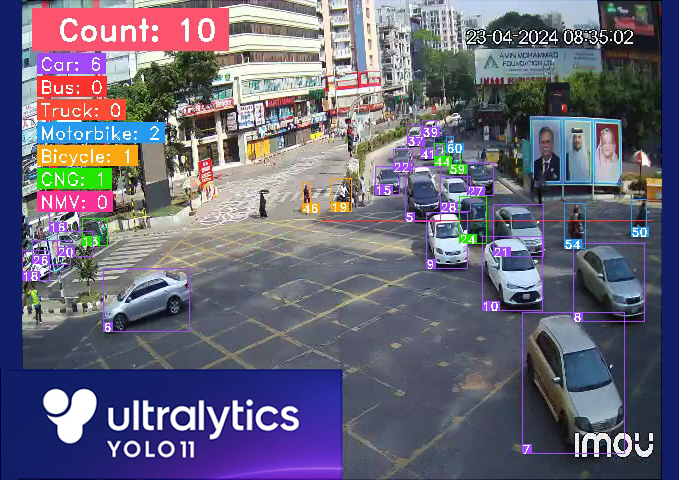
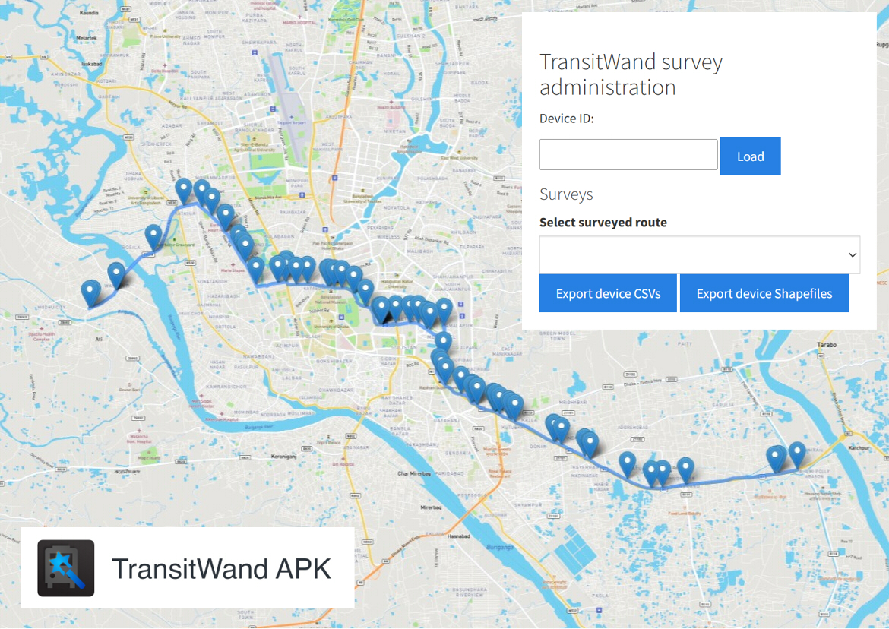

Ishayet Alam || Portfolio
Transportation Engineering || Spatial Analysis || Shared Mobility & Active Mobility || Traffic Simulation || GIS in Transportation || Computer Vision
This portfolio showcases my individual projects, reflecting my interest in transportation and geospatial analysis.
Currently I am interested in the applications of machine learning in solving real world problems.
In future I aspire to address real world challenges through innovative approaches that enhance mobility, accessibility and sustainability.
Projects

Open Space Accessibility in Dhaka City
I've established a benchmark for open space accessibility in Dhaka. The accessibility was scored depending on how far publicly available open spaces were from residents. My research is presented here with a brief methodology.
The full version of this study has been published and is open access. Check out Computational Urban Science by SpringerNature..

Vehicle Detection and Counting
A pipeline for vehicle detection and counting using a custom-trained YOLO model, OpenCV for video processing, and ByteTrack for vehicle tracking.

Simulation of Gulshan 2 Intersection in VISSIM
I compared the standard 4-phase signal layout of Gulshan-2 to an 8-phase Ring & Barrier signal layout. Simulations were conducted to evaluate improvements in traffic performance.

Public Transit Data Analysis - Dhaka
I’ve analyzed the boarding data for the surveyed transit line and visualized it with maps, graphs and charts.

Allocation of Bus Stoppages using Density Based Clustering (DBSCAN)
Using the data collected via TransitWand app, I analyzed the passenger engagement pattern and allocated some bus stops for the surveyed bus route. This process was done using ArcGIS pro’s Density Based Spatial Clustering of Applications with Noise (DBSCAN).

Service Area Analysis of Dhaka Metro Line-6
A network analysis on the existing metro line of Dhaka is showcased as an interactive map.

Route Investigation Survey
A novel approach to determining operational bus routes in a city. This survey can be incredibly helpful in a third world setting where transit data is unreliable and potentially misreported.

Set Covering Method (Demo)
I have built a small example to demonstrate the usage of set covering method for finding out the minimum number of survey spots for my Optimized Route Investigation Survey.

Implementation of TransitWand in Dhaka's Transit Planning
TransitWand is a mobile based app for surveying public transit. It can record the geolocations of embarking and disembarking passengers and export data in shapefiles (file format that supports geospatial data analysis). Making it a far superior surveying tool than any paper-based method. This is a brief review of the app and its usage benefits.
Get In Touch
Thank you for your time. Feel free to share your opinions.